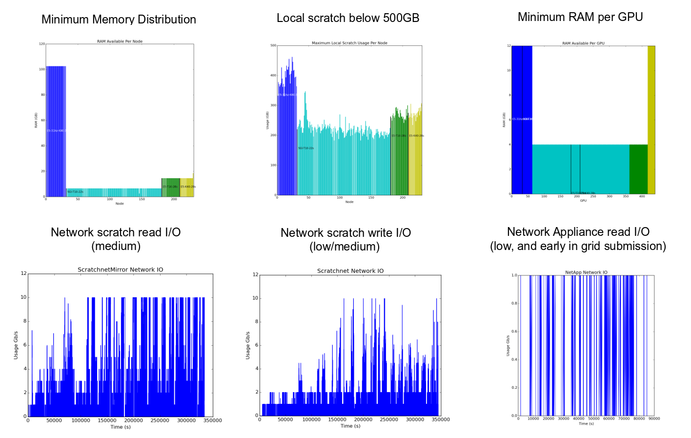

Choosing the right HPC required more than comparing specifications
Which combination of processors, GPUs, memory, storage, and networking would run the real workload with the best performance and efficiency?
I designed and built a tool called GridSim to simulate real timing data across configurable candidate architectures. The model represented queues, compute slots, CPU speed, RAM and swap, GPU capacity, local scratch, shared storage, network ports and switch behavior, compressed data movement, and grid-scheduler behavior.
A reusable way to compare expensive choices
The simulator was used across multiple HPC purchases and configuration questions. The analysis was estimated to avoid roughly $400,000 in unnecessary cost, much of it by showing that additional memory would not materially improve the primary workload.
Test the grid engine, not just the machines
GridSim could compare queue assignments, job-sorting algorithms, and Slurm-style or other grid-submission policies alongside the hardware. The model showed that storage placement and job ordering could dominate an expensive component upgrade. Moving diskless images away from a central filer reduced network pressure, while changing submission order significantly reduced overall completion time.

Original GridSim output: per-node resources and time-varying network I/O made the bottleneck visible. Candidate architectures could typically be evaluated in roughly 10–20 minutes.